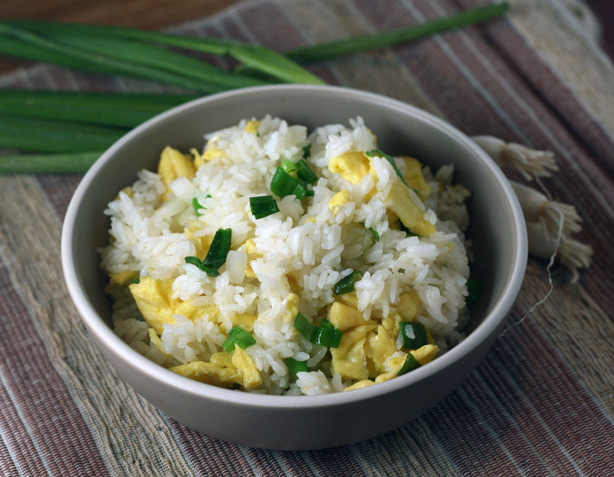

Home
Egg Fried Rice

Description
This simple and delicious fried rice is a staple in many households. You can enjoy this fragrant rice dish any time of the day. Breakfast, lunch or dinner!
Ingredients
- 3-4 cups cold, cooked rice (helps rice maintain shape)
- 2-3 green onion stalks
- 3 eggs
- 1 tsp salt
- A splash of milk
- 2 glugs vegetable oil
- A splash of sesame oil
Steps
- Whip eggs, salt and milk well.
- Bring your wok to high heat and swirl a glug of vegetable oil. When the oil is hot, add in the egg. Swirl the egg around, creating a wide circle. As the egg cooks, use a spatula to bunch cooked egg up and expose the uncooked egg to the pan's surface. Chop roughly using the spatula. The goal is create fluffy pieces of egg. Set the egg aside on a plate.
- Add another glug of vegetable oil. When hot, add in the green onions and stir for a minute. Add the rice in, breaking up chunks without smashing. Try to ensure an evenly coated, fluffy consistency. Mix around for a few minutes. Drizzle in a bit of sesame oil, taste and add more salt if needed.
- Add the eggs back in and toss the complete mixture around. Serve hot!